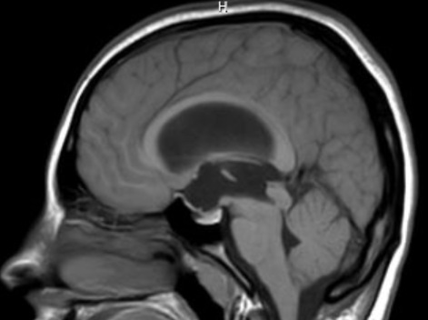
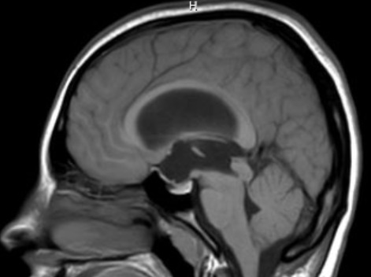

Convergence Retraction

- Repetitive convergence and retraction saccades of both eyes provoked by upgaze
- Looks like nystagmus, but there is no slow eye movement
- Part of a dorsal midbrain syndrome
- Common causes: pineal region mass, thalamic or dorsal midbrain tumor/stroke/ inflammation
- Uncommon causes: aqueductal stenosis, failed cerebrospinal diversion device or failed third ventriculostomy
-
Core clinical features
- Impaired upgaze
- Eyes converge and retract on attempted upgaze
- Patient reports eye discomfort on attempted upgaze because convergence retraction hurts
-
Possible accompanying clinical features
- Lid retraction (“Collier sign”)
- Anisocoria and large pupils that constrict poorly to a light but better to a near target (“tectal light-near dissociation”)
- Downgaze paresis
- Esotropia or exotropia
- Skew deviation
- Fourth cranial nerve palsy
- Patient adopts a chin-up position to avoid having to place the eyes in primary gaze position, which evokes unpleasant convergence retraction
- Downwardly deviated eyes, especially in shunt malfunction or thalamic hemorrhage (“sunset eyes”)
-
Imaging features
- Lesion in the thalamus, dorsal midbrain, or pineal region,
- Evidence of obstructive hydrocephalus, especially at the aqueduct


 

- Nothing, but this eye movement abnormality may go undiagnosed as it may appear only with upgaze
- Look for this eye movement abnormality, particularly if the patient has a history of shunted hydrocephalus, complains of eye discomfort with upgaze, or has diplopia, lid retraction, or pupils that fail to constrict to light
- Depends on the underlying lesion
- Convergence retraction and other features of dorsal midbrain syndrome may persist even if the underlying cause is relieved